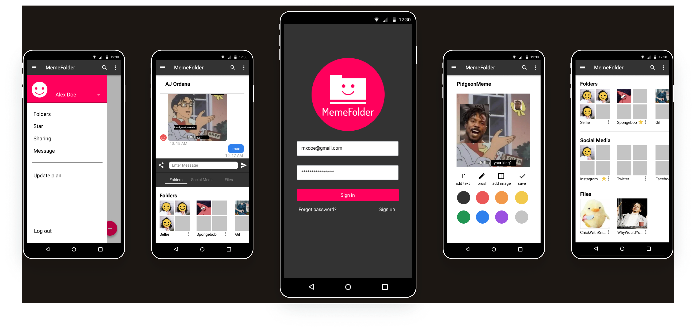
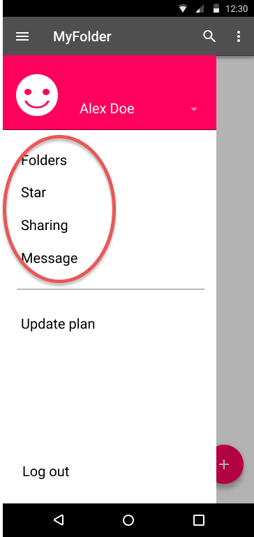
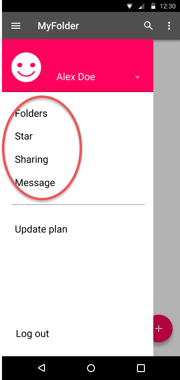

MemeFolder
MemeFolder is a cloud storage app that allows users to easily collect memes and reaction images from their social media, as well as edit photos so that they can create their own memes.

When this project started, I was asked to build a cloud storage program that allowed users to the following things:
There was not a lot of specific directives to follow regarding this process outside the objectives stated above. However, after going through several different iterations of the possible directions for this program’s brand, I decided on MemeFolder, a program that allows users to save image reactions and gifs from the internet and organize them into folders. It also allows users to edit image files so that they can create their own memes, as well as share them with friends.
I got my inspiration for this program from two places:
The MemeFolder should allow users to address both problems, which appear to happen rather frequently online. For many Millennial users, social media is an integral part of their lives, and as such it becomes necessary to be knowledgeable of meme culture as a visual style of communication. Considering the proliferation of meme formats available, it can become frustrating for users to find and keep track of existing memes in their phones or desktop; it can also be equally frustrating for users who are unable to find the memes or gifs that they want, as there is no easy way to easily get these image files directly from social media sites.
The user survey was created before the branding was established. I wrote the questions assuming that I will be creating a generic cloud storage program. The results I got from the people who completed the survey went as follows:
The most common reasons why people use a cloud storage:
| For work/school: | 85.7% |
|---|---|
| Personal reasons: | 71.4% |
| Collaboration and file sharing: | 64.3% |
Features that users rely on:
Majority of people surveyed are:
My intention was to create a cloud storage that addressed the aforementioned issues, which is evident in early prototypes. However, the idea for the meme editing feature came because 100% of the surveyed users are active participants of social media.
User personas were created based on the results from the survey. My users were profiled after the Facebook controversy and how they violated user privacy, which affected how they responded to the questions.

I chose Google Drive and Dropbox, which are two of the most popular cloud storage devices. I also chose to compare it with Amazon Drive, as it is an atypical cloud storage device that sells photo albums based on the pictures that users upload to this device. I wanted something unusual to compare with more traditional cloud storages to see how it would do in comparison.

This is the most popular cloud storage among the users surveyed and among the most user friendly. Google Drive has file editing programs and allows for real time collaboration between different users.
Dropbox is another widely used cloud storage, and is especially popular for businesses. They do have problems with security, as well as with syncing, which results in duplicate files.

Amazon Drive is not as widely used, though it comes from a strong brand. While user interface is not as friendly, its primary purpose in selling photographic memorabilia could attract a niche market.
| USER | TASK | IMPORTANCE |
|---|---|---|
| New user | I want to sign up for a new account | high |
| I want to sync this app to my social media | high | |
| I want to check the privacy settings to this program | medium | |
| I want to invite my friends to this app | medium | |
| Returning user | I want to sign in to my account | high |
| I want to upload an image to my account | medium | |
| I want to bookmark a folder | medium | |
| I want to bookmark an image | medium | |
| I want to upload my image to this app | medium | |
| I want to share a file with other users | medium | |
| I want to organize files | medium | |
| I want to create a new folder | medium |
This user flow is meant to show the trajectory of MemeFolder for returning users. Because this is meant to showcase its most commonly used features, I have decided to simplify the user flow here so that it would be easier to visually follow.
However, I have also included the link to the user flows I made for the first iteration of MyCloud.

The wireframes for the initial design were made based on a prototype called MyCloud, which was the first iteration of this project.
The style guide went through three iterations as I developed the brand for this cloud storage device.
The first iteration was called MyCloud, which was a generic device that allowed users to upload files and organize them in folders, as well as share them with friends. It offered one file editing program, which allowed users to edit pictures and make their own memes, in deference to the Millennial/Gen Z majority that took my survey. After completing the prototype, I realized that I should commit to this direction, and rebranded my program.
This resulted in the second iteration MyFolder, which is a cloud storage specifically made to collect and organize memes, gifs, and reaction images, mostly for the purpose of social media. This is an app-only program also allows users to create their own memes and share it with friends.
After making more changes to the brand, I came up with MemeFolder in the third iteration. It has the same functionality as MyFolder, but with minor changes in the logo and color scheme.
I started off with the sketch for my generic cloud storage, which included several logos that revolves around the cloud and sun imagery. I eventually settled on the one that led to the MyCloud logo, which represents the first iteration of this project.
I also drew a brainstorm that detailed the directions that this product can go to, and it’s from here that I came across the idea that meme editing could be included in the app, which was included in the MyCloud prototype and eventually became the focus of the brand that was to be MyFolder.
From these sketches, I created the next three iterations of my cloud storage app. In the following section, I’ve included the style guides for all of them, which includes MyCloud, MyFolder, and finally, MemeFolder.
For the MyCloud iteration, I created the following logo and the color scheme that was to go with it, as well as the chosen font:
I went with blue and yellow to convey the sky to match the cloud brand, and included darker red and green to give the program a neutral appearance since I believed the aforementioned colors to be too bright. For the font, I went with Righteous for the rounded edges to match the curves in the logo.
For the MyFolder iteration, I created the following logo and color scheme, as well as the chosen font:

I chose more dramatic colors to catch the eyes of a younger audience, focusing primarily on the contrast between dark grey and pink. I also chose Dosis for the logo’s font, as its much narrower appearance gives it a sleeker and more modern look. The change in the logo, a smiley face superimposed on a folder, is a reflection of how users will be able to pull image reactions from this folder in order to convey their emotions on social media.
For the MemeFolder iteration, I created the following logo and color scheme, as well as the chosen font:


I made minor changes to the logo to make it look minimalistic without appearing to be childish, and added different variations of what it could look like under different circumstances. There are also minor color changes, as I chose a marginally darker grey to provide a greater contrast with the pink. The fonts have remained unchanged.
In this section, I’ve included the user testing for all three iterations of the program.
For the MyCloud iteration, I meant to create a desktop version with a mobile app. In the inital testing, I looked at different preferences users have with:
Based on the result of the preference test, people preferred:
I used the following three slides in the preference test. The images on the right were the ones favored by people who participated in the test, and were ultimately included in the final version of the first prototype.
In the MyFolder iteration, I changed direction to create an app only version. The program initially had a bar at the bottom of the screen and app settings in the side bar. This was, however, an inconvenient design, and after running a test I ended up removing both and putting the features in the side bar instead.

 

In the MemeFolder iteration, I kept the integrity of the app, but changed the logo and made minor adjustments to the color scheme. Having received feedback that the logo at the time was not very aesthetically pleasing, I made adjustments to improve its appearance.

The completed prototype for the MemeFolder app can be found here:
Working on this project taught me that the process of developing a brand requires several iterations in order to focus on a particular direction. I realized after finishing this project that the initial direction that you want the project to go to may not be where it ends up, and that I needed to be flexible when I noticed that I can make changes that could improve the program itself, whether it is to sharpen its image or make its purpose more cohesive for users.
It also required tenacity, in that I had to be willing to redo the work that I had done in order to reflect the change in direction; I was initially resistant to this because I wanted to avoid doing more work that would be needed when I changed my brand direction, but embracing this has allowed me to make a stronger product. And even now, looking at MemeFolder, I am still thinking of ways I can improve the logo or enhance the prototype and include new features that users may want.
I have desisted for now, simply because there are other projects that I would like to spend my energy on, but working on this app has taught me that there can always be improvements and iterations that can make this project better for my users.